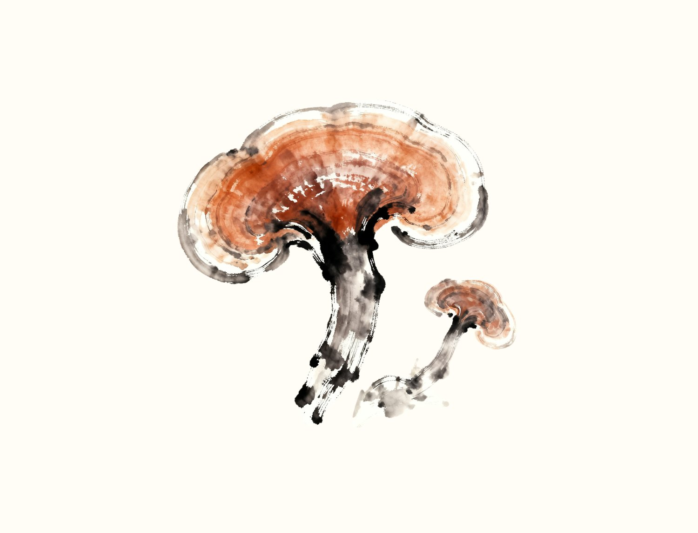
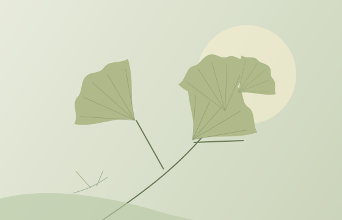
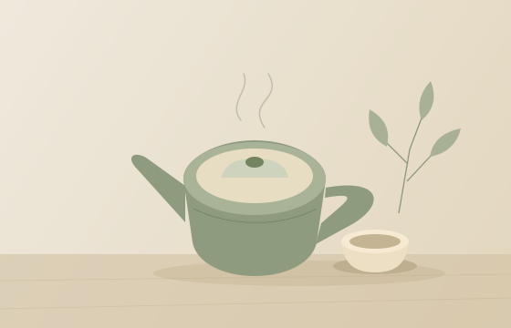
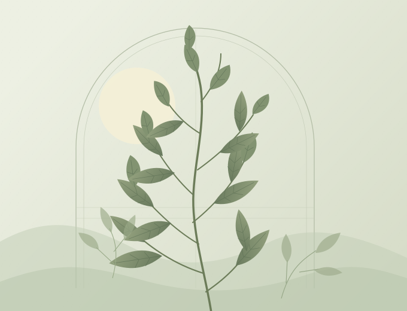

只切换首页公开内容画面，不发送业务请求。
失效条目直接隐藏；推荐与栏目区块空时整块隐藏。管理维护提示属于后续管理页，本稿不展示。
文化相伴 · 四时有序
一草一木，皆有来处。
从草木风物，到日常生活。走近医院文化，读一读四季的故事。

从一个感兴趣的话题开始
读一读 · 看一看
显示全部 3 篇推荐阅读

从一草一木出发，读一读藏在四季里的传统文化。

循着熟悉的器物，探寻日常生活中的风物与记忆。

循着一扇窗、一片叶，发现日常里安静的风景。
医院员工专属
办理工号、申请工牌，查看办理进度。
公开内容无需登录，可直接浏览。